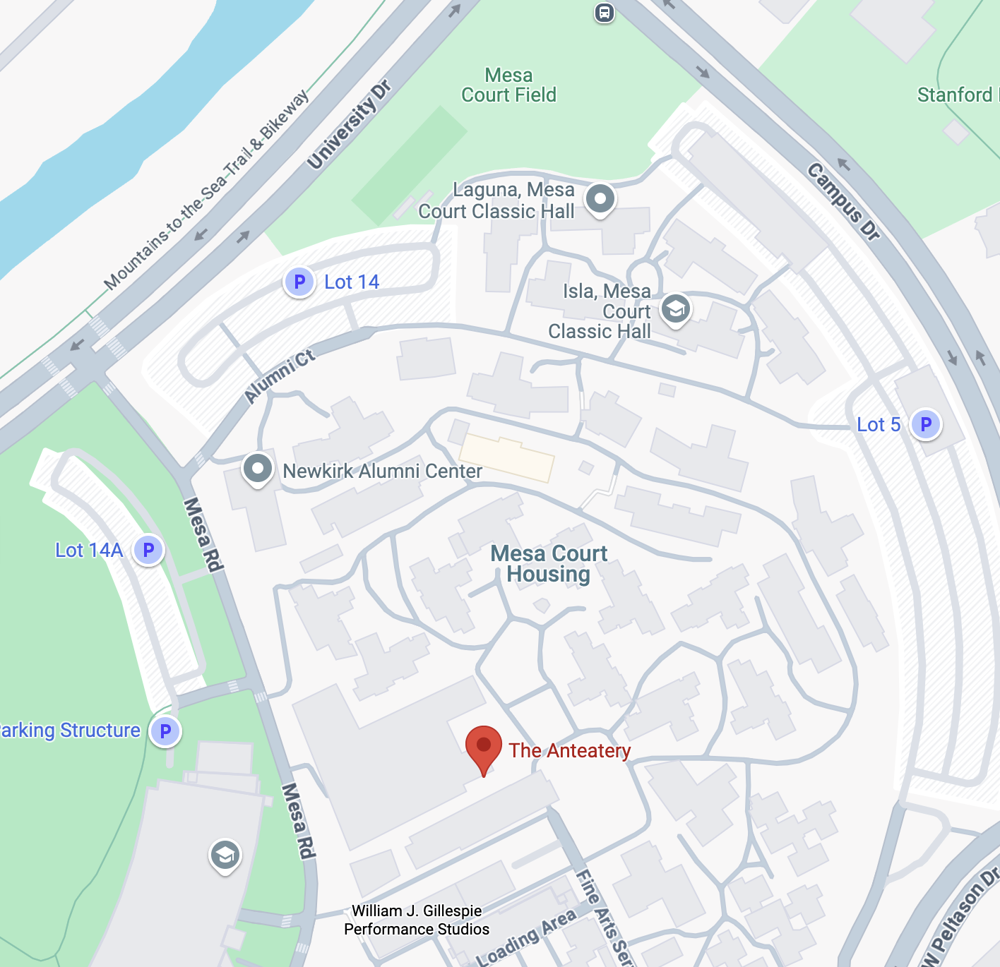

Cielo Dorm at Mesa Court Housing Complex
Office Location: 4001 Mesa Road, Irvine, CA 92617 (Monday-Sunday: 8am-8pm, 949-824-9377)
After-Hours Assistance: 949-872-8005
Check-in: June 22, 2025 2:00 PM-4:00 PM
Check-out: June 27, 2025 2:00 PM-4:00 PM
All meals are at Anteatery dining common
Airport
The University of California at Irvine is centrally located in southern California. The most convenient and nearby airport is the John Wayne Orange County Airport (SNA) which is about a short 10-15 minute drive from campus. Most hotels in Irvine have shuttle services which can pick you up directly from SNA. Two alternative airports are the Long Beach Airport (LGB), about a 30-minute drive from campus, and the Los Angeles International Airport (LAX), about a 50-minute drive away. If arriving from LAX, taxi service is available to Irvine which will cost approximately $100. Also there are many shuttle services which can take you from LAX to Irvine, for instance the Supper shuttle.
The talks will take place in the ISEB which you can locate on the Campus map (Building 419, Coordinates F5). The parking structure that is closest to ISEB is Parking Lot 16, with parking dispensor. Single-day parking permits are also available for purchase online. On weekends, you can park in the general parking spots with $13 one-day permit. For participants from other UC campuses, the parking permit from your home institution may be valid at UC Irvine. Please see the UC Irvine Visitor Parking website or call the parking office at (949) 824-7275 for more information.